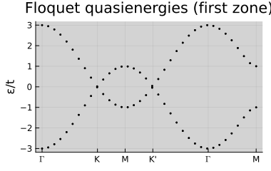
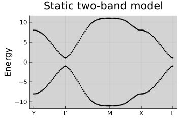
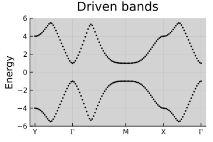

Tutorial 7 — Floquet Dynamics
Notebook: extra/tutorial/Tutorial7_Floquet.ipynb
Learn how to model periodically driven systems using the LatticeQM.Floquet module and interpret quasienergy spectra.
Learning goals
- Build Floquet Hamiltonians from static tight-binding models and driving protocols.
- Truncate harmonic spaces judiciously to capture resonant processes.
- Compute quasienergy spectra and track avoided crossings.
- Evaluate time-averaged observables and micromotion.
Prerequisites
- Tutorials 1–2 for standard Hamiltonian workflows.
- Basic understanding of Floquet theory.
Workflow outline
- Base model — Start with a lattice and tight-binding Hamiltonian (graphene or a custom model).
- Drive specification — Define periodic fields via helper constructors in
Floquet(e.g. circularly polarised light, pulsed fields). - Floquet construction — Use
Floquet.makefloquet(hops; harmonics, ω)or equivalent functions demonstrated in the notebook. - Diagonalisation — Solve for quasienergies with
Floquet.getspectrumor the standardSpectrum.getbandsapplied to the extended Hamiltonian. - Observables — Analyse mode occupations, compute time-averaged currents, and export plots.
Live example
Floquet.periodicDrive(5.0)Angular frequency of the periodic drive: 5.0
Non-zero harmonic modes: Integer[]
Fourier components of the driving operator: AbstractMatrix[]
figdir = joinpath(pwd(), "figures")
mkpath(figdir)
nothingbands = getbands(HF, ks)
Floquet.keepfirstFBZ!(bands, HF)
first(bands.bands, 3)3-element Vector{Float64}:
-3.0006369141872664
-3.0006369141871616
2.999363085812717p = plot(bands; ylabel="ε/t", marker=:none, size=(380, 240), title="Floquet quasienergies (first zone)")
savefig(p, joinpath(figdir, "floquet_bands.svg"))
nothing
Chern numbers for driven graphene (toy amplitude)
N = size(HF(ks.points[:, 1]), 1) ÷ 2
chern_vals = Spectrum.getcherns(HF, 16, 16, N-1:N+2)
chern_vals4-element Vector{Float64}:
-1.468098175631051
3.4736196434742115
-2.5939836477950786
1.0190057638192016Two-band toy model
static_cherns = Spectrum.getcherns(HB, 12, 12)
static_cherns2-element Vector{Float64}:
-0.9999999999999998
0.9999999999999999p = plot(bands_static; size=(360, 240), title="Static two-band model")
savefig(p, joinpath(pwd(), "figures", "floquet_static.svg"))
nothing
Driven two-band model
ω = 12.0
D = 0.8
M = 3
drive2 = Floquet.periodicDrive(ω, [[D 0; 0 -D], [D 0; 0 -D]], [1, -1])
HF2 = Floquet.FloquetOperator(HB, drive2, M)
bands_driven = Spectrum.getbands(HF2, path2)
Floquet.keepfirstFBZ!(bands_driven, HF2)
p = plot(bands_driven; size=(360, 240), title="Driven bands", ylims=(-ω/2, ω/2))
savefig(p, joinpath(pwd(), "figures", "floquet_driven.svg"))
nothing
chern_drive = Spectrum.getcherns(HF2, 12, 12, [2M + 1])
wind_drive = Spectrum.getwindnum(HF2, 12, 12, 2M + 1)
(chern_drive, wind_drive)([2.636779683484747e-16], -0.9999999999999998)Validation checklist
- Confirm quasienergy zones repeat modulo the drive frequency.
- Compare against static limits (
ω → ∞) to ensure convergence. - Save plots (typically under
output/floquet/) and verify they match the notebook reference.
Common pitfalls
- Insufficient harmonic truncation can create spurious gaps. Increase
Muntil bands and observables stabilise. - Beware energy folding: always compare spectra modulo
ωand consider callingFloquet.keepfirstFBZ!before plotting. - For large systems, prefer sparse types and limit the number of requested bands to keep memory in check.
Suggested extensions
- Couple Floquet results to linear-response calculations to estimate pump-probe signatures.
- Explore different truncation strategies and document runtime vs. accuracy.
- Benchmark parallel execution where available and capture typical runtimes for your hardware and parameter choices.